Quando parliamo di sport siamo abituati a rievocare una concezione che prevede l’atleta che in prima persona si cala nell’arena, lo sforzo fisico volto al raggiungimento di un obiettivo, una mitologia forte nel tempo e nel cuore di tifosi e spettatori. Tutte componenti che agli E-sports mancano, e per le quali generalmente rimangono fenomeno incompreso, venendo considerati corpo estraneo al mondo sportivo. Eppure, in accordo con le ultime decisioni del CIO (Comitato Internazionale Olimpico), gli E-Sports rischiano di vedersi aprire le porte della più classica tra le competizioni già a partire dai giochi di Parigi 2024. I primi passi sono già stati mossi: i prossimi Giochi Asiatici di Jakarta ospiteranno alcuni E-sports come discipline dimostrative dell’intero movimento. Seppur carenti delle caratteristiche di cui sopra, e per quanto rimanga discutibile definirli come sport, è innegabile che si parli di un fenomeno di cui tenere conto a livello mediatico ed economico. Gli E-sports non mancano certo di competitività, né tantomeno di seguito. Sull’onda mossa dai paesi asiatici, Korea del Sud su tutti, gli E-Sports sono diventati pratica ampiamente diffusa ad ogni latitudine. Tra questi, League of Legends è indubbiamente tra i titoli MOBA (Multiplayer Online Battle Arena) più giocati e seguiti al mondo. I suoi appassionati sono geograficamente trasversali: occidente e oriente, Nord America e Giappone, Oceania ed Europa, America Latina e Cina, fino alla Corea del Sud e al Vietnam. Questo pare non essere ancora abbastanza per i detrattori degli E-Sports, i quali portano sul banco un’ultima ma non meno significativa critica: la mancanza di Drama Shakespearino, l’empatia tra il tifoso e il campione che si immola per il compimento della propria impresa. Negli E-Sport è, di fatto, un avatar a scendere in campo, qualunque esso sia. Il giocatore rimane distante, seduto alla propria postazione assorto nel suo mondo tra schermo e cuffie. Ciononostante, come osservabile all’interno dell’infografica, nel caso di giochi come League of Legends seguire i propri campioni diventa un impegno a tempo pieno per migliaia e migliaia di fan.
Il calendario delle partite durante l’anno è estremamente fitto e ben organizzato, praticamente privo di sovrapposizioni, in modo da ottimizzare il tempo di trasmissione. Possiamo in particolare notare una suddivisione in fasce orarie delle partite, che si susseguono in ordine seguendo i fusi orari, in modo che ogni regione abbia la fascia oraria perfetta per gli spettatori locali ma anche per far sì gli spettacoli siano contigui e si possano seguire l’uno dopo l’altro. Altro fatto che si può notare dalla visualizzazione è come l’organizzazione dei giorni della settimana sia diversa di regione in regione: - I tornei europei sono giocati di venerdì e sabato. - Quelli americani il sabato e la domenica. - In Asia si gioca durante tutta la settimana.
Oltre che essere diversificati dal punto di vista dell’orario, c’è anche una significativa differenza nel modo in cui sono organizzati gli eventi dal vivo: ogni regione ha uno studio principale in cui viene giocata la maggior parte della regular season, uno spettacolo ricorrente di settimana in settimana che attrae un flusso costante di spettatori (per l’Europa è a Berlino). Durante l’anno vengono organizzati eventi speciali per permettere a giocatori di varie regioni di incontrarsi, oltre che per le finali: questi vengono gestiti in modi diversi tra le varie macro aree: quasi tutte hanno creato un hub centralizzato che ospita la maggior parte degli eventi, con qualche hub secodario che magari gestisce, o ha gestito, tornei di circuiti secondari non Riot. Per quanto riguarda l’Europa la situazione è un po' più complessa. L’eterogeneità della regione dal punto di vista delle nazioni, essendo l’unica che non coincide con uno o due stati, ha portato ad avere un circus itinerante per tutto il continente che attira fasce di pubblico sempre più ampie per la singolarità dell’evento (al momento all’appello mancano solo Italia e Portogallo come paesi ospitanti di un evento internazionale). È anche interessante andare a vedere come si siano distribuiti il numero di tornei e l’andamento del montepremi complessivo nel corso degli anni: - nelle prime fasi il numero di tornei, e di conseguenza il montepremi, è cresciuto considerevolmente, grazie alla contribuzione di sponsor sempre maggiori per un evento che è nato come Dreamhack, fino a raggiungere una fase di assestamento dopo la crescita esplosiva dei primi anni. - dal 2015 in avanti il numero di tornei ha iniziato a diminuire, ma il montepremi è aumentato anche più rapidamente di prima: questo perchè la selezione ha portato a restringere il circuito ai tornei più importanti, portando anche alla realizzaizone di eventi meglio organizzati e con premi sempre maggiori.

In particolare questo è visibile nell’ultimo grafico della dashboard che mostra come sono distribuiti i montepremi dei vari tornei nel corso degli anni, con una concentrazione sempre inferiore per quanto riguarda la fascia bassa e picchi sempre più alti per quanto riguarda la fascia alta. Merita un discorso a parte l’andamento dei montepremi dei mondiali, che rappresentano il massimale per ogni songolo anno: - Fino al 2015 era finanziato interamente da Riot Games. - Dal 2016 è stata introdotta una nuova forma di finanziamento basata sull’acquisto di contenuti specifici all’interno del gioco (Championship Zed) che ha portato il montepremi a moltiplicarsi. - Nel 2017 lo schema è stato ripetuto, con un nuovo contenuto a pagamento (Championship Ashe), ma con ritorni inferiori: questo semplicemente perchè Zed è un personaggio estremamente popolare all’interno del gioco, al contrario di Ashe. In modo simile si assiste a un picco per quanto riguarda il montepremi dell’MSI grazie alla creazione di un contenuto a pagamento apposito nel 2017: Conqueror Karma. I dati sugli eventi 2018, invece, non ancora disponibili alla stesura di questo articolo.
A questo punto è ormai chiaro come il giro d’affari degli E-Sport non si limiti al gioco in sè, ma si apra ad un mercato parallelo che si sviluppa attorno alle competizioni coinvolgendo sponsor, iniziative mediatiche ed eventi appositi. In questo senso vanno collocate anche tutta una serie di trasmissioni accessorie, talk show (vedi Beyond the Rift, Thorin Talks, Primetime League, etc) che aumentano in modo sempre maggiore la visibilità e ovviamente l’appetibilità per gli investitori. In questo contesto si va a collocare il prossimo network graph, il quale collega le squadre alle rispettive aziende affiliate. In particolare si può notare come sebbene la maggior parte degli sponsor, soprattutto in occidente, siano legati al settore videludico (i cosiddetti sponsor endemici) nelle altre parti del mondo questa fase è già stata ampiamente superata e si trovano aziende dai settori più disparati, come ad esempio Gillette. È interessante ricordare come in Europa diversi club di UEFA Champions League stiano muovendosi per entrare in questo mondo (su tutti lo Schalke 04 che ha un team nella massima serie europea di LoL) mentre in America la cosa sia già più affermata e con l’avvento del franchising nell’NA LCS la metà delle squadre siano legate a team NBA, oltre che ai propri sponsor, e in Corea del Sud addirittura i team siano sponsorizzati da anni da aziende di telecomunicazioni (SKT Telekom, KT) o compagnie aeree (Jin Air).
Abbiamo visto come, nel tempo, gli E-Sports si siano ritagliati un seguito, ed un mercato, di grande rilevanza ed in continua espansione. L'attenzione per questo fenomeno, anche da parte dei più sciettici, è destinata ad aumentare, portando a sempre maggiori investimenti da parte di sponsor da ogni settore andando a contribuire alla creazione di eventi di sempre maggiore spicco e portata.
Per la costruzione delle nostre visualizzazioni siamo partiti da tre dataset differenti provenienti rispettivamente da League_of_Legends_Esports_Wiki di Lol.gamepedia e utilizzando alcune lolesports API per effettuare diverse sessioni di scraping. Abbiamo compiuto alcune operazioni di data cleaning (uniformato tutte le valute dei montepremi in euro, geolocalizzato città nei relativi stati, uniformato gli orari delle partite allo stesso time zone). Uno dei dataset creato è stato successivamente caricato su Kaggle.
La nostra prima visualizzazione fa riferimento al dataset competitive 2016-2017 e si presenta come una dashboard composta da due elementi principali. La prima è un calendario interattivo delle partite dei tornei professionistici; abbiamo deciso di quelle relative all’anno 2017, per mostrare un fenomeno più vicino possibile a quello attuale. Sull’asse delle ascisse si trovano 31 colonne per i giorni del mese (ove non sono presenti 31 giorni le colonne sono vuote) mentre sull’asse delle ordinate si trovano le ore di una giornata. Le variabili utilizzate sono gameid e league. È possibile quindi visualizzare la distribuzione delle partite giocate durante l’anno, percorrendo la storia di mese in mese. Il numero di partite per cada ora è rappresentato simbolicamente da una forma geometrica, a seconda del numero di partite che occorrono contemporaneamente. Il colore invece è collegato direttamente allo specifico torneo giocato. La seconda visualizzazione è una mappa che mostra la distribuzione geografica dei tornei. Per questa visualizzazione sono state usate le variabili league, league(group), latitudine e longitudine2 autogenerate dal software Tableau, utilizzato per entrambe le visualizzazioni di questa infografica. La legenda copre 1/4 dello spazio totale e abbiamo voluto evidenziarla il più possibile in quanto occupa un ruolo importante di supporto alla lettura. La parte in basso a sinistra è stata ricavata sommando la durata di tutte le partite del 2017 (variabile gamelenght e attuando una conversione basandoci sui parametri forniti sul sito Wasted on LoL, un sito che consente a chi possiede un account di League of Legends di avere diverse statistiche sulle proprie performance di gioco. Ambedue i grafici sono interattivi e utilizzabili rispettivamente come filtro, quindi per esempio si può visualizzare per nazione quale sia l’orario di maggiore concentrazione di partite. Abbiamo optato per uno sfondo scuro per aumentare il contrasto con i colori della prima visualizzazione e favorire la leggibilità degli elementi già molto piccoli.
Per la nostra seconda visualizzazione abbiamo deciso di concentrarci sul mercato economico dei tornei. I dati fanno riferimento al dataset montepremi_final. Il primo grafico è una heat map, dove sia la variabile grandezza che colore indicano la maggiore concentrazione di tornei (variabile Location) in una determinata località. Al passaggio del mouse vengono fornite maggiori informazioni come il nome e il numero di tornei tenutosi, dato che viene comunque mostrano in maniera chiara dalla legenda sottostante. Nella parte inferiore sono presenti un linechart e uno scatter plot che funzionano sinergicamente, raccontando la stessa storia ma da prospettive diverse, ovvero l’andamento degli investimenti in materia di montepremi dei tornei in funzione anche del sorgere di nuovi nel periodo compreso fra 2011 e 2017. Il trend rappresentato dalla linea indica la somma del valore dei montepremi (variabile eur_prize) per ogni anno; abbiamo utilizzato la somma e non la media poiché abbiamo notato che la controtendenza degli anni 2014-2016 risultava più visibile. Lo spessore della linea rappresenta il numero di tornei organizzati (distinct count of Tournament). Sulla destra lo scatterplot indica la distribuzione economica del valore dei montepremi(variabile Eur_prize) per ogni anno dal 2010 al 2017. Abbiamo deciso di utilizzare una scala colore che va dal giallo (valore minimo) al rosso (valore massimo) La tonalità del colore è direttamente proporzionale alla grandezza del montepremi, mentre la grandezza indica la quantità di montepremi con lo stesso budget. Abbiamo aggiunto successivamente un filtro che divide i tornei in tre fasce economiche (Low - Medium - High), particolarmente utile per visualizzare la granularità interna e permettere al grafico di riscalare in base agli elementi visualizzati. Anche qui è possibile entrare nel dettaglio passando con il cursore sopra tutti gli elementi; in più l’interattività dell’infografica è favorito dalla possibilità di utilizzare ogni visualizzazione come filtro per le altre.
Per la nostra terza ed ultima infografica abbiamo deciso di utilizzare un Network Graph, realizzato tramite lo strumento online di Google Fusion Table. Questo tipo di grafico è stata la scelta più adatta in quanto volevamo rappresentare le relazioni che intercorrevano tra due entità, nel caso specifico le squadre di giocatori professionisti di League of Legends di 4 continenti e le aziende di diversi settori che le sponsorizzano. Per questa infografica sono state utilizzate le variabili Source e Target del dataset edges_total.xls come nodi del grafo, mentre con le variabili Country e Label abbiamo creato dei filtri interattivi. I nodi si presentano di dimensione maggiore a seconda del peso che hanno e la relazione che intercorre significa “A sponsorizza B”. Tenendo premuto il cursore su ogni singolo elemento vengono illuminati gli archi relativi. È possibile aumentare o diminuire il numero di nodi (le connessioni) tramite una pulsantiera ai lati della cornice, utilizzare i tasti "+" o "-" per lo zoom. Non è stata utilizzata nessuna scala colore particolare se non due tinte differenti per ciascuna variabile.
Come guida e best practice del nostro progetto abbiamo deciso di tenere in considerazione le euristiche di Zuk and Carpendale: Ensure visual variable has sufficient length: abbiamo cercato delle forme che fossero riconoscibili anche in dimensione ridotta e aumentato il contrasto di sfondo e in generale abbiamo dato abbiamo fatto diverse prove per dare ad ogni grafico la dimensione che lo rendesse il più fruibile possibile. Don’t expect a reading order from color: laddove abbiamo utilizzato le scale colori abbiamo anche affiancato una indicazione testuale che indicasse il senso di crescita. Color perception varies with size of colored item: abbiamo verificato che i colori venissero percepiti con la stessa scala colore rispetto alla dimensione assegnata alla variabile. Local contrast affects color & gray perception: abbiamo ricercato una tinta di sfondo in armonia con lo sfondo delle visualizzazioni che focalizzasse l’attenzione sui punti salienti ma allo stesso tempo supportasse la leggibilità delle variabili. Quantitative assessment requires position or size variation: nelle nostre visualizzazioni, ove necessario e utile la scala colore è stata selezionata in concomitanza con posizione e grandezza degli elementi per orientare l’utente all’ordine di grandezza di ogni elemento. Consider Gestal Laws: abbiamo dato a variabili simili scale colore simili (vedi per esempio uso scala colore dell’heat map e scatter plot della visualizzazione 2). Provide multiple levels of detail: è possibile utilizzare interattivamente filtro, modalità di zoom e highlighters per analizzare in maniera approfondita cada visualizzazione. In particolare nella Dashboard 2 è stata creata una vera e propria storia con i filtri, che consentono di visualizzare la granularità interna e di far riscalare l’asse delle y in base alla fascia montepremi. Integrate text wherever relevant: abbiamo inserito delle didascalie sotto ogni visualizzazione per dare delle indicazioni basilari all’utente che gli consentissero di prendere subito familiarità con il funzionamento.
Abbiamo chiesto a 4 persone di commentare le nostre visualizzazioni liberamente. Le persone coinvolte sono di età compresa tra i 24-30 anni, 2 di sesso maschile e 2 di sesso femminile con un livello di istruzione uguale o superiore alla Laurea Triennale. Siamo partiti dalla prima visualizzazione, che è stata accolta positivamente dal punto di vista estetico (gestione armonica dei colori e degli spazi, leggibilità). Il primo punto di confusione è giunto quando non tutti avevano capito che era effettivamente un calendario e in generale una difficoltà nel distinguere i diversi elementi di ogni colonna. Abbiamo pensato di risolvere questo problema di leggibilità alternando le tonalità del colore delle colonne. Un altro fattore di confusione è emerso dalla presenza di una frase sotto forma di una domanda nella legenda della seconda visualizzazione, inizialmente pensata per creare convolgimento e poi trasformata in una frase assertiva perchè provocava confusione. La terza visualizzazione non ha suscitato particolari critiche, se non per l’aggiunta di una legenda più visibile. Il questionario psicometrico e l’user test sono stati sottoposti in successione per cada visualizzazione, per cui ogni utente ha risposto a: 2 domande di profilazione, Task sulla I visualizzazione, questionario relativo, Task sulla II visualizzazione, questionario relativo, Task sulla III visualizzazione, questionario relativo. Gli utenti sono stati informati della anonimizzazione dei dati raccolti prendendo visione della seguente dicitura : “Le risposte che Lei ci darà saranno ritenute confidenziali e non saranno trattate a livello nominale, ma elaborate assieme alle risposte fornite da tutti gli altri componenti del campione di utenti a scopo di ricerca ricerca ai sensi dell’articolo 13 del Codice in materia di protezione dei dati personali (D.Lgs.n 196/2003 – c.d. “Codice privacy”)”
Abbiamo voluto ipoteticamente verificare quali fossero le differenze significative fra due gruppi di utenti per volta, rispettivamente maschi e femmine e giocatori (hanno giocato almeno una volta o ci giocano abitualmente) e non giocatori (non ne hanno mai sentito parlare o di sfuggita) di league of Legends in materia di tempi di esecuzione, possibilità di errore e indicatori di apprezzamento.
Gli individui coinvolti in questa indagine sono individui di età compresa fra i 18 e i 50 anni, suddivisi in 14 donne e 22 uomini per un totale di 36 persone. I soggetti coinvolti sono stati anche divisi in base al livello di familiarità con il videogame MOBA League of Legends per un totale di 14 giocatori e 22 non giocatori per un totale di 36 persone. Le prime due visualizzazioni sono state mostrate tramite monitor PC attraverso il sito di tableau.public per mantenere le funzioni interattive, la terza visualizzazione è stata mostrata agli utenti già incorporata nella pagina HTML finale. Il questionario, creato tramite Form di Google veniva compilato anch’esso tramite pc ma su un secondo schermo, per evitare il processo di cambio schermata che avrebbe potuto influire negativamente sulle performance del test. Il tempo è stato registrato dall’intervistatore tramite la funzione cronometro del proprio dispositivo mobile.
Abbiamo proposto ai nostri soggetti di eseguire un task per ciascuna visualizzazione, il compito consisteva nel rispondere ad una domanda dopo aver visualizzato ed interagito con il grafico per circa 15 secondi, la risposta prevedeva una interazione di qualche tipo (l’uso di un filtro, l’uso dello zoom o dell’analisi in dettaglio di un elemento della dashboard o del grafo.
Per testare l’ipotesi dell’esistenza di una differenza nei tempi di esecuzione tra i due gruppi giocatori/non giocatori abbiamo eseguito un t-test per campioni indipendenti sui tempi di tutti e tre i task. Si evidenzia una differenza significativa tra i tempi di esecuzione del task relativo alla prima visualizzazione, con t(34)=2.23, p=0.02 per cui i giocatori risultano più efficienti. Mentre non è emersa differenza significativa nelle altre due visualizzazioni, con t(34)=0.04, p=0.48 per la seconda dashboard e t(34)=0.55, p=0.29 per il Network Graph. È possibile visualizzare la distribuzione dei tempi di esecuzione nei violin plot sottostanti:
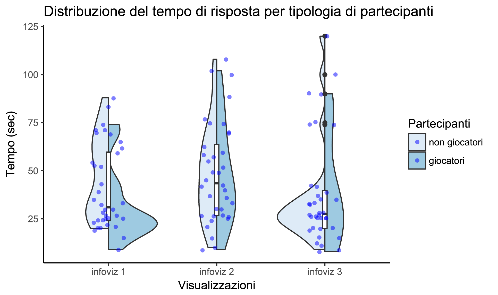Abbiamo poi analizzato la correttezza delle risposte cercando differenze tra i due gruppi tramite l’analisi di tabelle di contingenza. Prima abbiamo eseguito il test di Fisher su 3 diverse tabelle di contingenza 2X2 contenenti su un asse sempre il livello di esperienza (giocatori - non giocatori) e sull’altro il numero di risposte corrette o sbagliate alle 3 domande. Il test relativo alla prima e alla seconda visualizzazione sono risultati statisticamente significativi con p=0.03 e p=0.04 rispettivamente, mentre non è emersa alcuna differenza significativa nella terza visualizzazione con p=0.11.
Abbiamo poi voluto eseguire nuovamente i test prendendo come campioni questa volta gruppi di utenti divisi per sesso. In tutti i test eseguiti sulle tre visualizzazioni non è emersa alcuna differenza statisticamente significativa: Gruppo 1 = Maschi, Gruppo 2 = Femmine Execution time reporting T-test Prima visualizzazione t(34) = 0.16 p = 0.44; Seconda visualizzazione t(34)= 1.43 p=0.08; Terza visualizzazione t(34)= 1.07 p=0.14; Contingency Table Prima visualizzazione p = 0.41; Seconda visualizzazione p=0.34; Terza visualizzazione p=0.31;
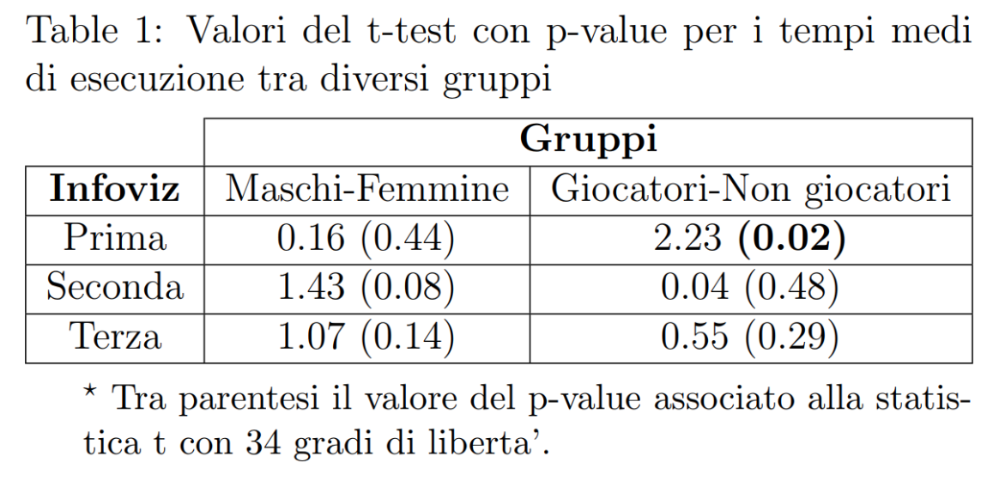Dopo ciascuno dei tre task ai soggetti è stato chiesto di compilare un questionario di soddisfazione relativo all’infografica appena vista. Il questionario scelto consisteva in 6 item (utile, intuitiva, chiara, informativa, bella, valore complessivo) presentati tramite una scala Likert a 6 livelli. Abbiamo scelto consapevolmente di utilizzare una scala di Likert pari per togliere ai nostri utenti la possibilità di stagnarsi in un valore centrale “comfort zone” e, data la natura breve del questionario forzarli gentilmente ad una decisione. Per indagare la nostra ipotesi secondo la quale sarebbero potute emergere differenze nelle risposte ai questionari sulla base della familiarità al gioco abbiamo effettuato un test di Mann-Whitney per ciascuno degli item per ciascuna visualizzazione. Non sono emersi risultati significativi per nessuno degli item. I violin plot sottostanti mostrano la distribuzione delle risposte al questionario per ogni Item:
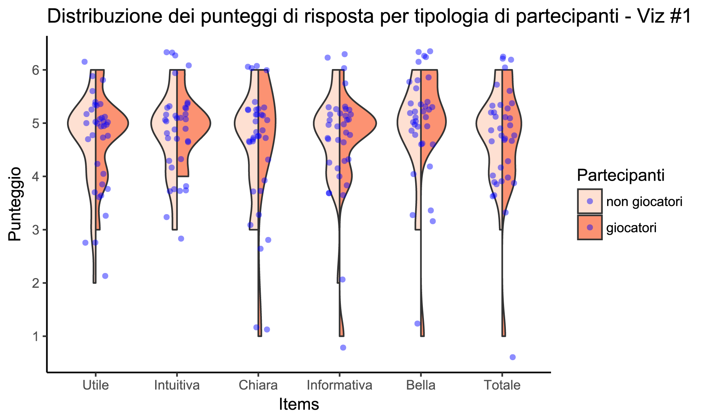 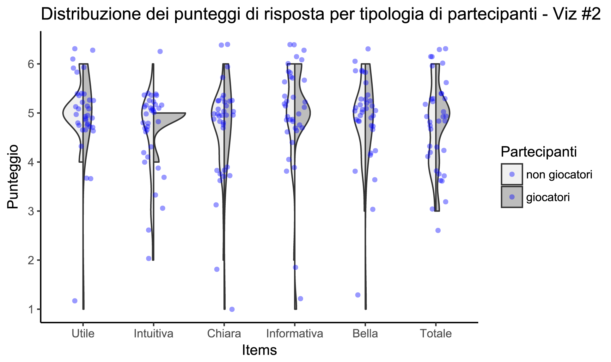 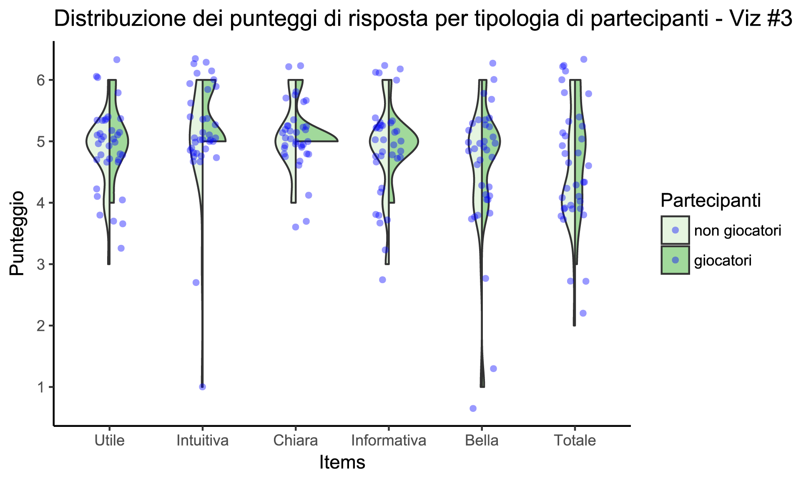Infine abbiamo considerato le risposte da 1 a 4(incluso) come risposte tendenzialmente negative e i 5 e 6 come risposte positive per valutare la polarizzazione attraverso un test binomiale delle risposte dei diversi item. I test effettuati su tutti gli item hanno evidenziato una polarizzazione positiva (p < 0.05), con l'eccezione del item Valore totale della terza visualizzazione che ha ottenuto p=0.43 che però non presenta neanche una polarizzazione negativa. I grafici sottostanti mostrano la percentuale di risposte negative (1-2), neutre (3-4) e positive (5-6) per ogni item di ogni visualizzazione.
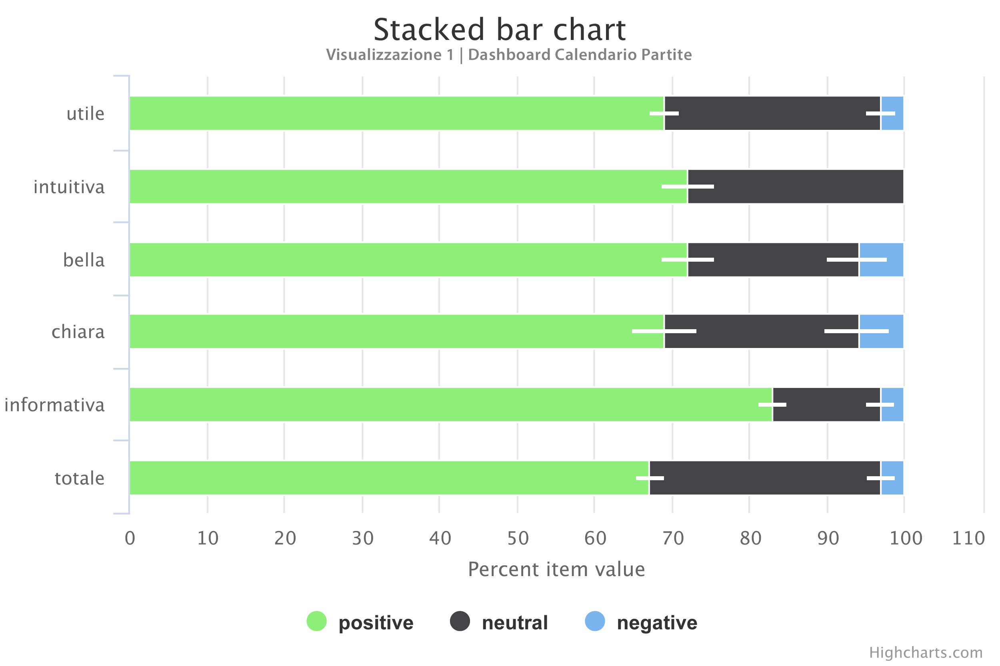 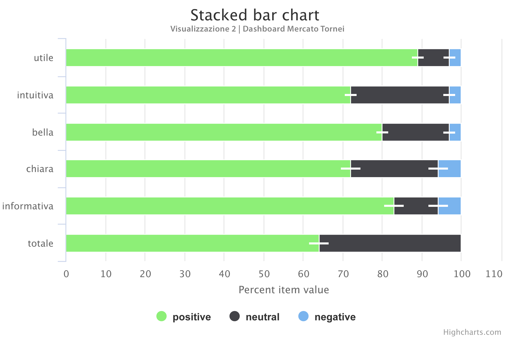 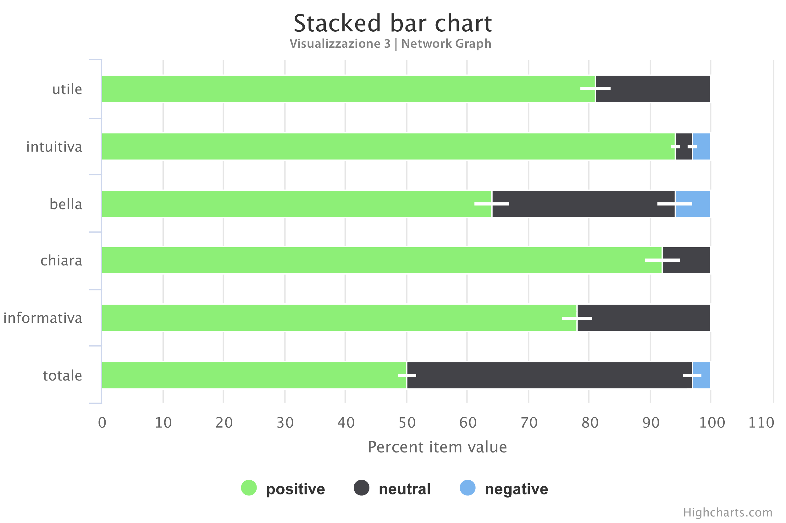In ultima battuta abbiamo voluto esplorare le possibili correlazioni tra gli item dei questionari tramite una matrice di correlazione (corrplot). Non ci sono correlazioni significative tra item per la Dashboard 1. Per la Dashboard 2 le correlazioni tra item significativi sono: utile e bella (0.74). Per il Network Graph le correlazioni tra item significativi sono utile e informativa (0.66).
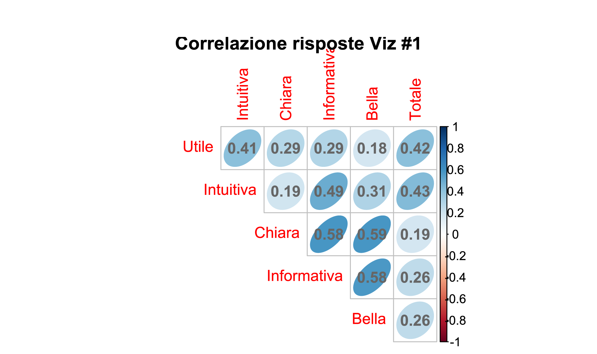 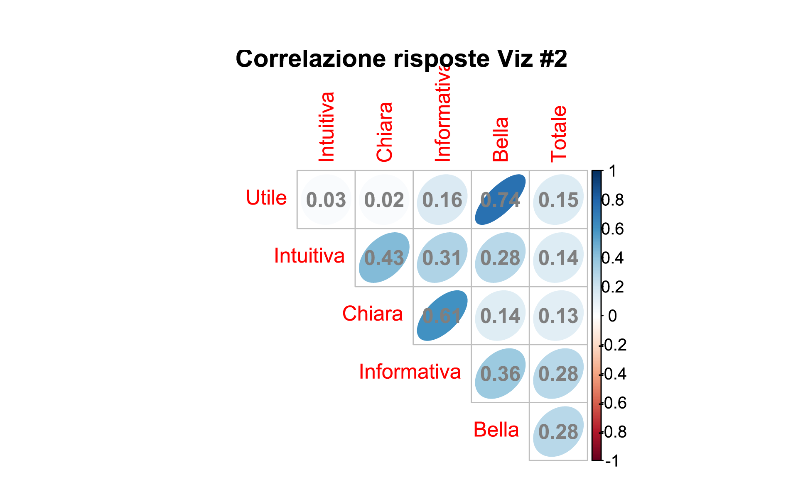 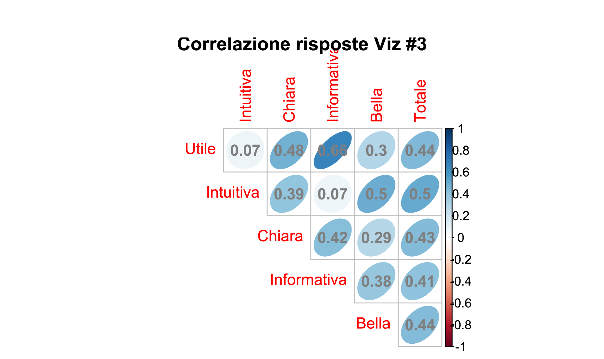Good Luck in E-Sports - DM Report
Valutazione Qualità - Google Moduli